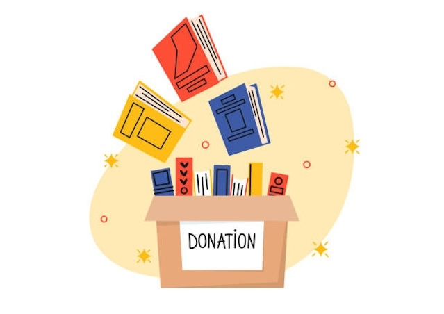

"According to Words Rated, more than 160,000 truck loads of unread books are wasted each year and 10 million trees are wasted for the production of these unread books."
That is a blurb from the Chicago Review of Books' website. Isn't that a scary figure? When you think of recycling, most peoples' minds go to:
Scraps of Paper
Reusable Water Bottles
The "Save the Turtles" Movement
But what about the inch-thick stacks of paper you have in your living room, your library, and your classrooms? What about your books? In their article, the Chicago Review of Books discusses this issue of ethical book consumption. Read more here: Article on Book Waste

Photo From istockphoto.com
So How Can You Help?
Buy used books! Find thrift stores, used book stores, and local book shops near you to checkout their used books collections!
Donate your old books! If you have old children's books, books that you bought for one class years ago, or a never-ending "TBR" list, consider donating them to a local reused book location to give them another chance in the literary world and to be loved by another reader!
Use E-readers and audiobooks! Technologies like Kindle, Nook, and Audible are greate examples of digitized literaure that can help reduce paper publications and the waste of unread copies laying around on shelves.
Do your research! Learn which publishers are more ethical than others, where to donate, and how to be able to make sure your donations are received. Here is a good resource for guidelines for book recycling in Massachusetts: Recycling Tips!